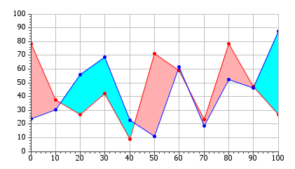
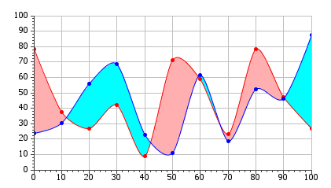

com.jidesoft.chart.model.LineSmoother
com.jidesoft.chart.model.LineSmoother
|
JIDE 3.3.3 | ||||||||
| PREV CLASS NEXT CLASS | FRAMES NO FRAMES | ||||||||
| SUMMARY: NESTED | FIELD | CONSTR | METHOD | DETAIL: FIELD | CONSTR | METHOD | ||||||||
java.lang.Object
public class LineSmoother
This class contains utility methods to convert a ChartModel (or arrays of point coordinates) into a GeneralPath that uses Bezier curves to connect the points.
For example, the DifferenceMarker class makes use of the methods here when its smooth property is set to true. Here are screen shots showing the 'before' and 'after' states of applying LineSmoother methods to the DifferenceMarker.
| Before | After |
|---|---|
|  |  |
| Method Summary | |
|---|---|
static GeneralPath |
prepareCyclicPath(Chart chart,
double[] xs,
double[] ys,
double smoothness)
The input points must already be cyclic, so the last x,y pair is expected to be the same as the first |
static GeneralPath |
preparePath(Chart chart,
ChartModel model,
double smoothness)
Prepares a GeneralPath in pixel coordinates as a smooth path joining the points of the model |
static GeneralPath |
preparePath(Chart chart,
ChartModel model,
double smoothness,
boolean reverseOrder)
Prepares a GeneralPath in pixel coordinates as a smooth path joining the points of the model |
static GeneralPath |
preparePath(Chart chart,
double[] xPoints,
double[] yPoints,
double smoothness)
Prepares a General Path that uses Bezier curves to visit the supplied points and join the curve segments smoothly |
| Methods inherited from class java.lang.Object |
|---|
clone, equals, finalize, getClass, hashCode, notify, notifyAll, toString, wait, wait, wait |
| Method Detail |
|---|
public static GeneralPath preparePath(Chart chart,
ChartModel model,
double smoothness)
chart - the chart containing the modelmodel - the chart model of interestsmoothness - the smoothness of the line
public static GeneralPath preparePath(Chart chart,
ChartModel model,
double smoothness,
boolean reverseOrder)
chart - the chart containing the modelmodel - the chart model of interestsmoothness - the smoothness of the linereverseOrder - specify whether the order of the supplied model should be reversed when generating the curve
public static GeneralPath prepareCyclicPath(Chart chart,
double[] xs,
double[] ys,
double smoothness)
chart - the chart for which the path is being preparedxs - an array of the x points as pixel coordinatesys - an array of the y points as pixel coordinatessmoothness - the smoothness of the line
public static GeneralPath preparePath(Chart chart,
double[] xPoints,
double[] yPoints,
double smoothness)
chart - the chart for which the path is being prepared (used for checking whether points are viewable)xPoints - an array of the xPoints as pixel coordinatesyPoints - an array of the yPoints as pixel coordinatessmoothness - the smoothness of the line joining the points
|
JIDE 3.3.3 | ||||||||
| PREV CLASS NEXT CLASS | FRAMES NO FRAMES | ||||||||
| SUMMARY: NESTED | FIELD | CONSTR | METHOD | DETAIL: FIELD | CONSTR | METHOD | ||||||||